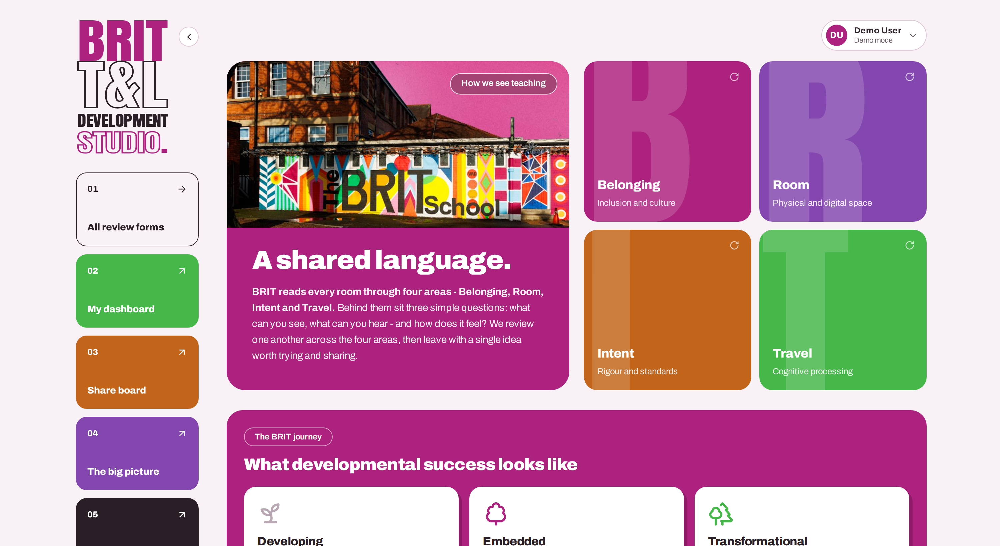

02
The T&L Development Studio
A bespoke teaching-and-learning platform built for The BRIT School. Staff review one another's practice against a shared four-area framework — capturing peer reviews, learning walks and departmental reviews — while leadership sees the whole picture through live analytics. Designed around the school's own language, safeguarding standards and data-protection needs, with two built-in AI assistants that support the framework and read anonymised trends only.
Interested in bespoke T&L management platforms? Get in touch →